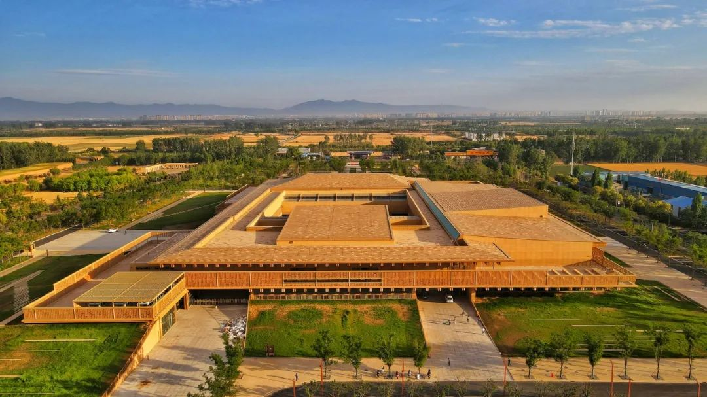
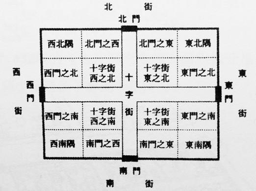

历史背景
汉朝继承秦制并推进中央集权，建筑上既延续了秦朝的宏伟气势，又发展出更为成熟的木结构体系和城镇规划理念。汉代宫殿、陵墓、都城与桥梁等大型工程的建设，展现了宏大国家机器与工匠团队的卓越组织能力。
- 木构体系完善：汉代木构架结构细节更为成熟，斗拱、椽子等构件规范化程度提高。
- 城市与都城建设：长安、洛阳等都城规模宏大，体现"九州一统"的政治意象。
- 桥梁与水利：赵州桥之后，汉代桥梁造诣继续提升，水利工程如都江堰维护与拓展。
汉朝建筑工程数据可视化
汉朝·建筑类型统计
注：基于历史文献与考古资料统计，汉代建筑表现出宫殿与陵墓占比显著，同时水利与桥梁建设体现中央对河道与交通的高度重视。
汉朝·建筑材质分析
注：汉朝建筑以木材、夯土和砖石为主，木结构持续主导宫殿与民居；夯土、砖石则在城墙、陵墓以及水利工程中大量应用。
汉朝代表性建筑成就
点击任意卡片查看详细信息
长安城
作为西汉首都的长安城规模宏大，布局严谨，宫城与皇城分区明确，反映出汉代都城规划的高标准与政治象征意义。

洛阳城
东汉时期的洛阳城为都城，继承并发展了长安的格局，同时在河道治理和城市尺度上有显著提升，成为汉代后期政治文化中心。

长安闾里
汉代都城及地方城市普遍实行里坊制度，以“里”为单位封闭管理，形成规整的平民居住区，奠定了中国古代城市居住空间的基本范式。
郦道元渠
汉代水利治理在江汉平原与黄河流域展开，多处水利工程奠定了后世农业生产和城镇发展的基础。